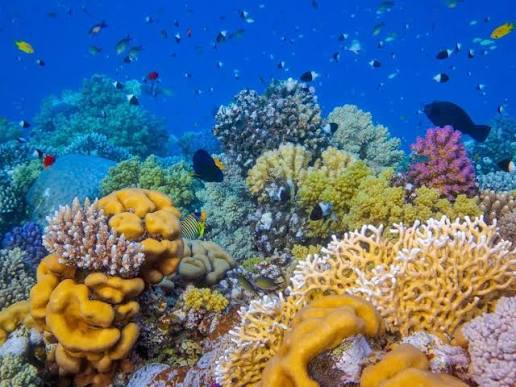
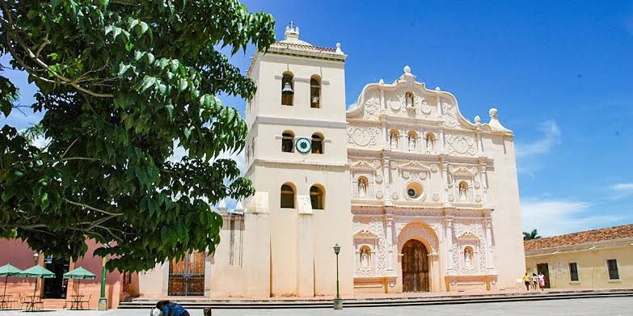

Parque Arqueológico Copán Ruinas
El Parque Arqueológico Copán es uno de los legados más deslumbrantes de la civilización maya, reconocido mundialmente como la "París del Mundo Maya" debido a la exquisitez y el realismo de sus esculturas en piedra. Este sitio destaca por albergar tesoros monumentales como la famosa Escalinata de los Jeroglíficos el texto jeroglífico más extenso de esta cultura. Declarado Patrimonio de la Humanidad por la UNESCO, este santuario arqueológico ofrece una ventana única al esplendor artístico, político y científico de los antiguos mayas.

Arrecife de coral
El Arrecife de coral mesoamericano, que bordea las costas caribeñas de Honduras especialmente en las Islas de la Bahía, forma parte de la segunda barrera de arrecifes más grande del mundo. Este vibrante ecosistema marino impresiona por su extraordinaria biodiversidad de flora y fauna, convirtiéndose en un santuario mundial para el buceo y la conservación marina.

Comayagua
Comayagua destaca por su impresionante valor histórico y colonial, habiendo sido capital de Honduras. Su centro histórico cautiva con sus calles empedradas, iglesias coloniales y un ambiente tradicional único, siendo además famosa por albergar en su catedral la joya mecánica que es uno de los relojes más antiguos de América en funcionamiento continuo.
Datos de Honduras
Un destino lleno de maravillas.
Biodiversidad
Más de 7,000 especies de plantas, 1,300 de aves y una rica vida marina en sus arrecifes y costas.
Clima
Tropical, con temperaturas promedio de 24 °C a 28 °C durante todo el año.
Moneda
Lempira hondureño (HNL).
Ubicación geográfica
Se encuentra en el corazón de Centroamérica, limitando al norte con el Mar Caribe y al sur con el océano Pacífico.